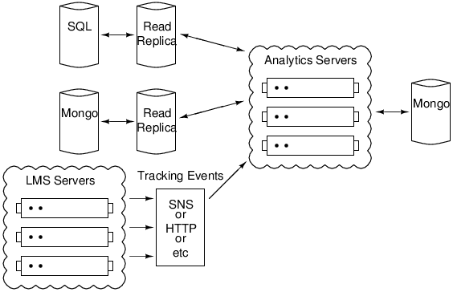

Analytics at edX
Vik Paruchuri
Analytics User Needs -- Students
Easier
- Statistics on their own performance.
- Breakdowns of how they are performing relative to other students.
Harder
- Hints as they attempt problems.
- Interpretable streams of their activity through a course, including time on task.
- Smart grouping via activity in the course.
Analytics User Needs -- Instructors
Easier
- Breakdowns of student performance on each section of the course.
- Information on student enrollment rates and locations.
Harder
- Alerts when unexpected events occur (ie a large number of students dropping/adding the course)
- Real time monitoring of course statistics and grades.
Analytics User Needs -- Researchers
Easier
- Dumps of all existing edX data for a given course.
Harder
- Incremental data delivery.
- Versioning to figure out what exact resources students were using at a given time.
Other Potential Users
Developers
- Monitor course enrollments around new feature releases.
Marketing
- Find students with interesting or unusual activity patterns.
Where is the Data?
Mongo
- Course and problem metadata.
RDS/SQL
- Student state with respect to courses and problems.
Tracking logs
- Student activity as they move through learning sequences.
- Will shortly be streamed into Mongo, but currently log files.
Current State of Analytics -- Data
Queries
- Most queries are run manually on the RDS read replica.
- Some queries for instructor dashboard generated by prod-task-001.
Data Dumps
- Manual data dumps are sent to researchers.
Current State of Analytics
| Instructor Dash |
Instructor Grades |
 |
 |
Future of Analytics
Key Goals
- Define an area for long running-tasks/queries to execute.
- Allow users to define what data they want and access it, instead of manual queries.
- Have easy-to-use instructor dashboards to get relevant data in graphical and csv formats.
- Have access to all relevant edX data in order to expose it to researchers and analytics modules.
- Allow users to authenticate and access only the data that they are allowed to see.
- Don't impact the operation of the production LMS machines.
Future of Analytics
djanalytics
- Defines decorators for views, queries, events, and periodic tasks.
- Sets up an API based on the decorators.
- Abstract filesystem and database away from the decorated modules.
- Allow for events to be streamed in.
- Is an installable python package.
Future of Analytics
edxanalytics
- Built on top of djanalytics.
- Has edx specific functionality and modules.
edxanalytics Diagram

Questions?